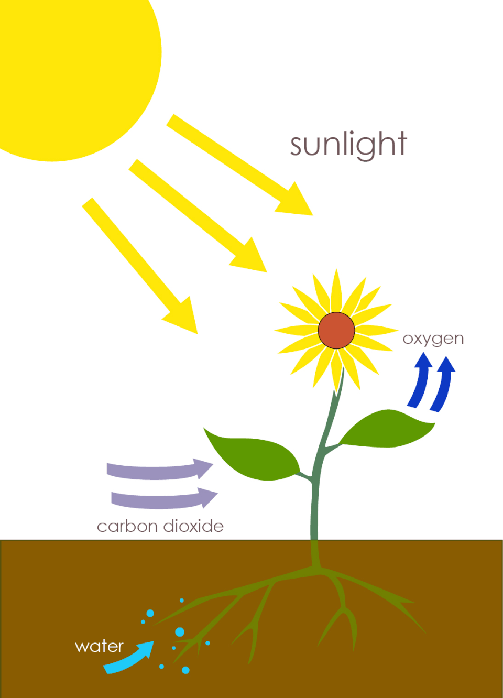

Core Content
EXAM TIP
Nutrition & Vitamins: Macronutrients (carbs, proteins, fats) + Micronutrients (vitamins, minerals). Fat-soluble vitamins: A (night blindness), D (rickets), E, K (blood clotting). Water-soluble: B-complex (beriberi B1, pellagra B3, pernicious anaemia B12), C (scurvy). Key minerals: Calcium (bones), Iron (haemoglobin/anaemia), Iodine (goitre), Zinc (immunity). Balanced diet, BMI, malnutrition. Bihar: high malnutrition, stunting, ICDS/Anganwadi, Mid-Day Meal, POSHAN Abhiyan.

Photosynthesis in plant cells — chloroplasts convert CO₂ + H₂O + light energy → glucose + O₂. Chlorophyll (green pigment) captures light. This process is the foundation of all food chains and the source of oxygen in the atmosphere. Understanding photosynthesis connects nutrition (Topic 71) to plant physiology (Topic 75). Bihar's agriculture (rice, maize, makhana) depends on this process.

Iron deficiency anaemia — visible as pale, small RBCs. Bihar faces high rates of anaemia (especially in women and children), stunting, wasting, and iodine deficiency. Government programmes: ICDS (Anganwadi), Mid-Day Meal, POSHAN Abhiyan, and Weekly Iron Folic Acid Supplementation (WIFS) for adolescents. Bihar's makhana (GI-tagged) is a rich source of protein and minerals.
💡 Deep-dive ready: Complete analysis of all vitamins, minerals, deficiency diseases, Bihar nutrition programmes, and 7 exam predictions:
Nutrition & Vitamins Master Detail →
A. Macronutrients — Carbohydrates, Proteins, Fats EXAM CORE
| Nutrient | Function | Sources | Daily Need |
|---|---|---|---|
| Carbohydrates | Main energy source (4 kcal/g) | Rice, wheat, potatoes, sugar | ~55-60% of calories |
| Proteins | Building blocks (4 kcal/g), enzymes, muscles | Meat, fish, eggs, pulses, dairy, soy | ~10-15% of calories |
| Fats | Energy storage (9 kcal/g), insulation, hormones | Oil, ghee, butter, nuts, fish | ~20-30% of calories |
B. Fat-Soluble Vitamins (A, D, E, K) PYQ PATTERN
| Vitamin | Function | Deficiency Disease | Sources |
|---|---|---|---|
| A (Retinol) | Vision, skin, immunity | Night blindness, xerophthalmia | Carrot, liver, milk, eggs, yellow vegetables |
| D (Calciferol) | Calcium absorption, bone health | Rickets (children), osteomalacia (adults) | Sunlight, fish liver oil, milk, eggs |
| E (Tocopherol) | Antioxidant, skin health | Rare — neurological issues | Vegetable oils, nuts, seeds, leafy greens |
| K (Phylloquinone) | Blood clotting | Excessive bleeding | Leafy greens (spinach), cabbage, liver |
C. Water-Soluble Vitamins (B-Complex, C) EXAM CORE
| Vitamin | Function | Deficiency Disease | Sources |
|---|---|---|---|
| B1 (Thiamine) | Carbohydrate metabolism, nerves | Beriberi (nerve/heart damage) | Whole grains, pulses, pork, yeast |
| B2 (Riboflavin) | Energy metabolism | Ariboflavinosis (mouth sores) | Milk, eggs, green vegetables |
| B3 (Niacin) | Energy metabolism | Pellagra (3 Ds: dermatitis, diarrhoea, dementia) | Meat, fish, peanuts, whole grains |
| B6 (Pyridoxine) | Amino acid metabolism | Anaemia, skin issues | Meat, fish, potatoes, bananas |
| B9 (Folic acid) | DNA synthesis, RBC formation | Megaloblastic anaemia, birth defects | Leafy greens, legumes, liver |
| B12 (Cobalamin) | Nerve function, RBC formation | Pernicious anaemia | Meat, fish, eggs, dairy (NOT in plants) |
| C (Ascorbic acid) | Collagen synthesis, immunity, antioxidant | Scurvy (bleeding gums, weak immunity) | Citrus fruits, amla, guava, peppers |